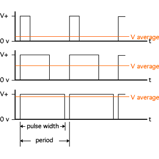

Muchas veces nos gustaría controlar la cantidad física de una acción: qué tan brillantes sonlas luces, qué tan rápido se mueve un motor, cuantos grados girar, etc. En este caso estaremos hablando de salidas de tipo analógico, con este tipo de salidas podemos tener un grado de control sobre la salida, donde el resultado no solo se limitará a ON-OFF.
Como la mayoría de los microcontroladores no pueden generar un voltaje (real) variable en sus pines de salida, una de las soluciones para resolver esta carencia es utilizar un truco electrónico que se basa en la modulación del ancho del pulso – Pulse Width Modulation - (PWM para abreviar).
